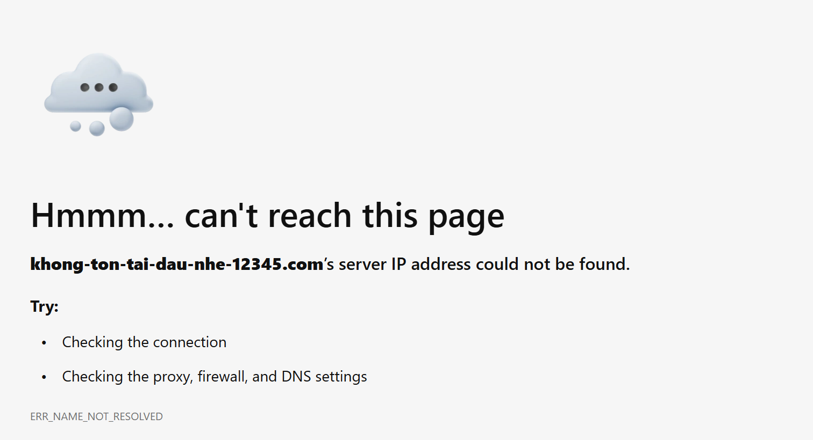
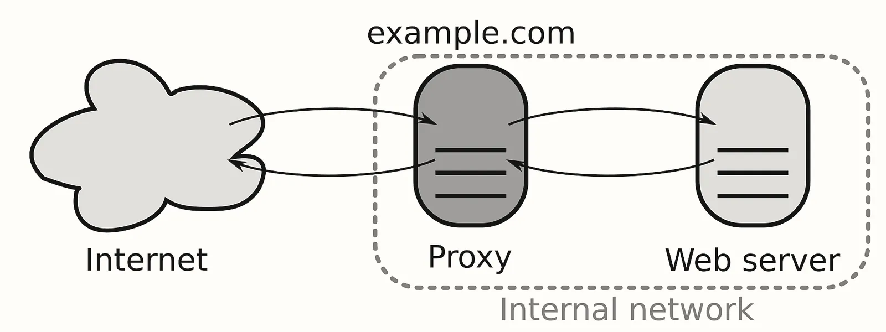
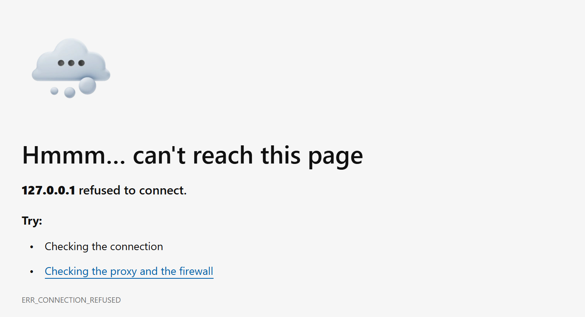
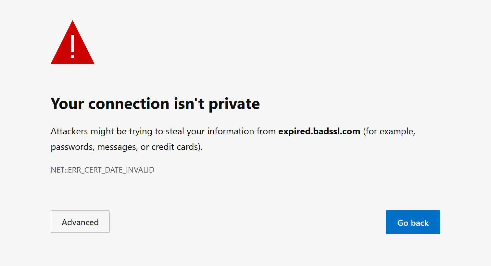
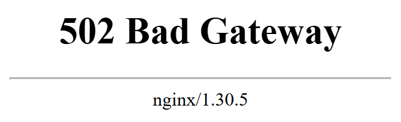
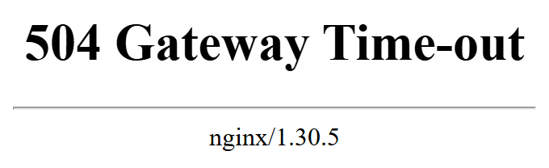
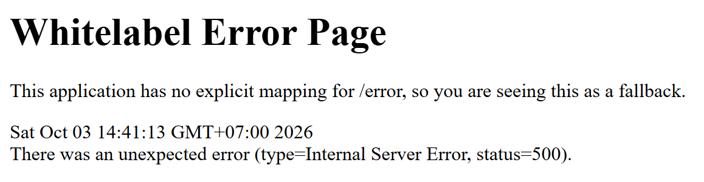

Module 0 · Bài 02
App chạy ngon ở localhost:8080, đưa lên server thì người dùng báo không vào được. App của bạn ghi một dòng log mỗi khi nhận một request, vậy mà log không có dòng nào về request của họ. Request đã dừng ở đâu, và chỗ đó là việc của ai?
Trên máy bạn, browser gọi localhost:8080 là vào thẳng app Spring Boot. Đưa app lên server rồi thì người
dùng gõ https://shop.example.com, và trước khi vào tới controller của bạn, có bốn chỗ mà trên máy bạn không có. Trước hết, browser phải hỏi DNS để đổi domain ra địa chỉ. Có địa chỉ rồi, packet tới cửa server, nơi một bộ lọc xem từng packet rồi cho qua hay chặn.
Qua cửa, request gặp một chương trình đứng trước app, nhận request thay cho app. Trước khi đọc request, chương trình ấy làm TLS handshake với browser. Trong bước này nó gửi cho browser certificate, một thứ giấy tờ chứng minh server là chủ của domain. Bước này có thể hỏng ngay cả khi chương trình ấy vẫn chạy bình thường, nên nó là một chỗ riêng trên đường đi.
Vì có bốn chỗ ấy nên lời báo "không vào được" của người dùng chưa cho biết request dừng ở đâu. Mà log của app không có dòng nào, tức request chưa vào tới app. Nó có thể dừng ở một trong bốn chỗ ấy, ở các router của nhà mạng giữa đường, hoặc đã tới chương trình đứng trước app nhưng app phía sau không chạy, nên chương trình ấy không chuyển request vào được. Hình 1 chạy hai request cùng lúc, một trên máy bạn, một đi lên server, để bạn so sánh.
Trong bốn chỗ ấy, DNS thì bạn đã gặp ở Bài 01, lúc resolver đi hỏi từng cấp. Bộ lọc ở cửa server gọi là .
Chương trình đứng trước app trong Hình 1 là Nginx, một chương trình người ta hay đặt ở chỗ đó. Sau Nginx và TLS handshake là app, rồi tới database phía sau app; không tính các router của nhà mạng, vì không ai ở phía bạn đụng tới được chúng, thì trên đường đi có sáu chỗ: DNS, firewall, Nginx, TLS handshake, app và database.
Request HTTP đi qua firewall, Nginx rồi tới app, và mỗi chỗ đọc nó tới một mức khác nhau, nên chỗ nào hỏng thì lời báo người dùng nhận được cũng khác. DNS thì không thấy request, nó chỉ trả lời câu hỏi về domain. Nginx và app đọc hết request HTTP ở layer 7, nên chỉ hai chỗ này viết được status code như 502, 500. Firewall đặt ở cửa server thường chỉ đọc tới địa chỉ và port, tức layer 3 và layer 4 trong bảy layer ở Bài 00, nên nó không viết được status code nào.
Biết đường đi rồi, nhưng người dùng không nhìn thấy đường đi, họ chỉ thấy một lời báo lỗi. Mỗi chỗ hỏng thì lời báo ấy trông thế nào? Browser và curl cùng dừng ở một chỗ và báo cùng một lỗi, mà curl in lỗi thành một dòng chữ dễ chép, nên ngày 14/11/2026 mình chạy curl trên Git Bash (Windows 11, curl 8.10.1) để xem lời báo ở bốn chỗ trước app. Dòng lỗi ở cả bốn chỗ đều có một con số trong ngoặc như (6) hay (28). Con số ấy là exit code của curl, còn chữ đi sau nó kể curl dừng ở bước nào.
Các lệnh curl ở bốn chỗ trước app đều có option -sS. Option -s tắt những chữ phụ curl tự in thêm, như thanh tiến độ, nhưng tắt luôn cả dòng lỗi, nên phải thêm -S để curl vẫn in dòng lỗi.
Bước đầu tiên là đổi domain ra địa chỉ. Nếu domain gõ sai hay chưa ai đăng ký, DNS trả lời "không có tên này"; nếu tên có mà chưa trỏ tới địa chỉ nào, DNS trả lời tên ấy không có địa chỉ. Trong cả hai trường hợp, máy người dùng mới chỉ hỏi DNS, chưa mở kết nối nào tới server, nên server không biết gì.
Ở trường hợp đầu, trang lỗi của browser có error code DNS_PROBE_FINISHED_NXDOMAIN ở cuối. NXDOMAIN là chữ server DNS dùng để nói tên này không tồn tại. Với curl thì cả hai trường hợp cho ra cùng một dòng, Could not resolve host.
$ curl -sS https://this-name-does-not-exist-12345.com/
curl: (6) Could not resolve host: this-name-does-not-exist-12345.com
DNS_PROBE_FINISHED_NXDOMAIN.Có địa chỉ rồi, máy người dùng mở kết nối TCP tới port 443 của server. Trên server, firewall đứng trước mọi chương trình, xem từng packet đi vào rồi cho qua hay chặn theo luật người làm DevOps đặt, kiểu "chỉ mở port 443 cho người dùng và port 22 cho người làm DevOps đăng nhập vào server". Packet bị chặn thì firewall thường bỏ đi mà không báo lại, nên phía người dùng cứ chờ tới khi hết giờ, gọi là timeout.
Mình không có server bật firewall để thử, nên gọi 10.255.255.1. Mạng nhà mình không có máy nào mang địa chỉ
này, nên packet đi mà không ai trả lời, giống lúc firewall bỏ packet. Lệnh gọi http:// nên curl kết nối tới
port 80, nhưng packet bị bỏ ở port nào thì curl cũng chờ như nhau. Option --connect-timeout 5 bảo curl chỉ chờ 5 giây,
rồi chính curl viết dòng (28), vì không ai nói gì với nó cả.
$ curl -sS --connect-timeout 5 http://10.255.255.1/
curl: (28) Failed to connect to 10.255.255.1 port 80 after 5014 ms: Timeout was reachedFirewall cho qua thì kết nối tới được port 443. Ở máy bạn, app tự nhận request ở port 8080, còn trên server, người ta thường không để người dùng gọi thẳng vào port 8080 mà đặt Nginx đứng trước, như ở Hình 1. Nginx nhận request ở port 443, port mặc định của https, lo phần TLS, rồi chuyển request vào app ở port 8080 trên cùng máy. App vẫn chạy như trên máy bạn, chỉ khác là bên gọi nó giờ là Nginx chứ không phải browser. Chương trình đứng trước app theo cách đó gọi là reverse proxy.
Vì sao phải thêm một chỗ nữa trên đường đi? Lý do hay gặp là một server chạy nhiều app, mỗi app một domain. Người dùng chỉ gõ domain, nên dù vào app nào thì browser cũng gọi port 443, mà ở một port chỉ một chương trình nhận được kết nối. Vì vậy Nginx đứng nhận ở 443, nhìn domain trong request rồi chuyển vào app được gắn với domain ấy. Thêm nữa, TLS certificate chỉ cần gắn ở Nginx, nên các app phía sau không phải lo phần TLS. Cái giá là đường đi dài thêm một chỗ, và chỗ ấy cũng có thể hỏng.
Nếu Nginx đang tắt thì ở port 443 không có chương trình nào listen, và hệ điều hành của server từ chối ngay. Lời từ chối ấy khác hẳn timeout khi gặp firewall, vì lần này hệ điều hành của server có trả lời.
Mình thử bằng port 9999 trên chính máy mình, vì ở port ấy không có chương trình nào listen. Lệnh curl -sS http://127.0.0.1:9999/ ở bên cạnh bị từ chối ngay, vậy mà curl báo lỗi sau 2010 ms. Hai giây ấy là do Windows ở phía curl: bị từ chối thì nó tự đợi một lúc rồi xin mở kết nối lại, làm thế thêm hai lần, lần sau đợi lâu hơn lần trước.
Hình 2 đặt firewall chặn và Nginx tắt cạnh nhau, cùng với trường hợp mọi thứ chạy, để bạn chọn rồi xem curl chờ bao lâu.

$ curl -sS http://127.0.0.1:9999/
curl: (7) Failed to connect to 127.0.0.1 port 9999 after 2010 ms: Could not connect to server
127.0.0.1:9999. Dòng "refused to connect" nghĩa là máy ở đầu kia có trả lời, và
câu trả lời là từ chối.$ curl -sS --connect-timeout 5 https://shop.example.com/
chọn một trạng thái của server ở trênshop.example.com và port thành 443.Kết nối mở xong, browser và Nginx làm TLS handshake. Trong TLS handshake, Nginx gửi certificate của shop.example.com cho browser. Certificate ấy có ngày hết hạn, và nếu tới ngày đó mà chưa ai gia hạn thì browser từ chối đi tiếp, dù server, Nginx và app vẫn chạy bình thường.
Trang cảnh báo ở Ảnh 4 dễ làm người ta đoán sai. Trang ấy hiện thay cho cả trang web, nên nhìn vào thì tưởng server đã sập. Nhưng browser chỉ hiện được cảnh báo này khi đã có địa chỉ và đã mở được kết nối, tức DNS, firewall và Nginx đều đã chạy tốt. Trang ấy do browser tự viết sau khi kiểm tra ngày trên certificate; server không gửi trang nào cả.
$ curl -sS https://expired.badssl.com/
curl: (35) schannel: next InitializeSecurityContext failed: SEC_E_CERT_EXPIRED (0x80090328) - The received certificate has expired.
expired.badssl.com, một trang dựng sẵn với certificate đã hết hạn từ 12/04/2015.Qua TLS rồi, Nginx đọc request và chuyển vào app ở port 8080. Từ chỗ này trở đi, mọi lời báo lỗi đều là một câu trả lời HTTP có status code, vì chương trình viết ra nó đã đọc được request. Có điều chương trình viết ra status code ấy không phải lúc nào cũng là app.
Nếu app không chạy, Nginx gọi vào port 8080 thì bị từ chối, và chính Nginx viết trang lỗi 502 Bad Gateway gửi về người
dùng. Nếu app chạy mà chậm quá, Nginx chờ hết giờ rồi viết trang 504 Gateway Time-out. Cả hai trang đều có chữ
nginx ở cuối, chữ ký của chương trình đã viết ra hai trang ấy.
Còn khi app chạy, nhận request, mà code ném exception, thì app tự trả status code 500. Trang lỗi lúc ấy là trang của Spring Boot,
không có chữ nginx nào, và request đã vào tới code của bạn.


nginx/1.30.5.
IllegalStateException.Chỗ cuối cùng trên đường đi là database. App Spring Boot thường đọc, ghi dữ liệu ở một database như PostgreSQL. Database là một chương trình riêng, và trong bài này nó chạy trên cùng server với app. Nếu database tắt trong lúc app đang chạy, app vẫn nhận request, nhưng mỗi lần cần dữ liệu thì không kết nối được và trả 500.
App mẫu của khoá là một app Spring Boot nhỏ lưu ghi chú vào PostgreSQL, và mình đã chỉnh nó để vẫn khởi động khi chưa có database. Mình chạy nó ngày 14/11/2026 trong mà không bật PostgreSQL, rồi gọi /notes, path cần đọc database.
Lệnh gọi /notes có option -i. Option này bảo curl in thêm dòng đầu và các header của câu trả lời. Dòng đầu có mã như HTTP/1.1 500, gọi là status line.
Lệnh curl chỉ nhận được status code 500, và người dùng cũng chỉ thấy có thế, giống hệt khi code ném exception. Lý do thật nằm trong log của app, ở dòng app báo không kết nối được tới database. Dòng ấy cùng chữ "refused" với trang lỗi ở Ảnh 3, chỉ khác là bên bị từ chối giờ là app. App gọi port 5432, port mặc định của PostgreSQL, mà lúc ấy ở port đó không có ai nhận.
$ curl -s -i http://localhost:8080/notes
HTTP/1.1 500
Content-Type: application/json
...# trong log của app
java.net.ConnectException: Connection refused (connect failed)Ở cả sáu chỗ trên đường đi, từ DNS tới database, lời báo lỗi nào người dùng thấy cũng do một chương trình viết ra: curl hay browser, Nginx, hoặc app. Biết ai viết thì biết request đã đi tới đâu. Có status code như 502, 500 là request đã qua DNS, firewall, Nginx và TLS handshake, vì phải có chương trình đọc được request mới viết ra status code. Không có status code mà chỉ có dòng lỗi của curl hay trang lỗi của browser thì chưa có chương trình nào đọc được request.
Trong Hình 3, bấm vào một chỗ để làm hỏng nó: request đi lại từ đầu, dừng ở chỗ hỏng đầu tiên, và ô "lời báo nhận được" hiện thứ người dùng thấy ở chỗ hỏng, kèm tên chương trình đã viết ra nó.
lời báo nhận được
HTTP/1.1 200
bấm vào một chỗ để làm hỏng nó, bấm lần nữa để sửa
shop.example.com, port thành 443, và lược bớt chữ ở vài dòng dài. Request trong hình gọi /notes,
path cần đọc database. Ở ô database, curl chỉ nhận được status code 500, còn lý do thì app ghi vào log của chính nó.Request trong vụ đầu bài chưa tới app, nên bốn chỗ trước app là nơi phải tìm trước. Bốn chỗ trước app đều không phải code, nên không ai sửa được lỗi DNS bằng cách sửa controller. Khi lỗi nằm ở bốn chỗ ấy, người phải vào cuộc là người làm DevOps, người lo cho mọi thứ quanh app để app chạy được trên server và người dùng gọi tới được.
Bảng 2 kê việc người làm DevOps làm ở từng chỗ. Riêng dòng app thì việc chia làm hai phần. Code là của bạn, người viết app, hay gọi là developer; còn việc đưa app lên server và giữ cho app chạy là của người làm DevOps. Exception trong controller là việc của developer, còn app không chạy vì server hết bộ nhớ, hay chạy bản cũ vì quên đưa bản mới lên, là việc của người làm DevOps. Trong nhiều công ty nhỏ, hai việc ấy do cùng một người làm.
Có những chỗ người làm DevOps không sửa được, như router giữa các nhà mạng hay phần cứng của công ty cho thuê server. Người làm DevOps không vào được những thiết bị ấy, nên khi chúng hỏng thì chỉ báo được cho nhà mạng hay công ty cho thuê server rồi chờ bên đó sửa.
| Chỗ | Người làm DevOps làm gì |
|---|---|
| DNS | khai báo trên DNS domain trỏ về địa chỉ server nào, sửa khi đổi server; gia hạn domain |
| firewall | chỉ mở những port cần mở, như 443 cho người dùng, 22 cho người làm DevOps đăng nhập |
| Nginx | cài, cấu hình làm reverse proxy chuyển request vào app |
| TLS | xin certificate từ một nơi cấp certificate mà browser tin, gắn vào Nginx, gia hạn trước khi hết hạn |
| app | build, đưa lên server, chạy app, đặt cho app tự chạy lại khi nó chết; code bên trong vẫn là của developer |
| database | chạy database, sao lưu dữ liệu, khôi phục khi hỏng |
Code chỉ đổi khi có người sửa, còn nhiều chỗ quanh app thì tự hỏng theo thời gian, nên người làm DevOps phải canh cả những ngày chẳng ai đụng vào server. Certificate TLS có hạn dùng, thường vài tháng, nên app không đổi gì mà tới ngày certificate hết hạn thì người dùng thấy trang cảnh báo như Ảnh 4. Domain cũng có hạn dùng, quên gia hạn lâu thì tên bị xoá, và DNS trả NXDOMAIN như Ảnh 1. App ghi log mỗi ngày một ít, để lâu thì đầy ổ đĩa của server, database không ghi được nữa, và những request cần ghi dữ liệu bắt đầu nhận 500 dù không ai đưa bản mới nào lên.
Kéo thanh ngày ở Hình 4 hay bấm chạy để thời gian trôi trên một server không ai đụng vào, rồi bấm gia hạn, dọn log để xem lời báo của người dùng đổi theo.
Domain
còn 365 ngày
TLS certificate
còn 90 ngày
ổ đĩa 40 GB
đã dùng 12 GB
màn hình người dùng
HTTP/1.1 200
No space left on device ở dòng dưới lời báo là lời hệ điều hành trả về khi PostgreSQL ghi vào ổ đầy. Mình chưa chạy tới lúc ổ đầy thật, nên chữ này là kỳ vọng, chưa phải output thật.Với app ở đầu bài, muốn biết request dừng ở đâu thì tự dùng curl gọi domain và path người dùng đã gõ, hay xin người dùng ảnh trang lỗi, rồi theo Bảng 1 tìm chương trình đã viết ra lời báo. Còn chỗ đó là việc của ai? Sáu chỗ trong Bảng 2, từ DNS tới database, là việc của người làm DevOps, trừ code bên trong app. Router của nhà mạng thì nằm ngoài sáu chỗ ấy, hỏng thì chỉ báo được cho nhà mạng rồi chờ.
Lab này cho bạn tự gặp lại các lời báo vừa đọc, ngay trên máy bạn. Các lệnh chỉ in thông tin hay gửi request đi rồi in câu trả lời, không
đổi gì trên máy, nên chạy xong không phải dọn. Output trong các khối là của mình, chạy ngày 14/11/2026 trên Windows 11, Git Bash, curl 8.10.1, có lược bớt ở chỗ ghi ...; số mili giây trên máy bạn sẽ khác. Từ bước 2 tới bước 7, đọc output rồi tìm dòng của nó trong Bảng 1, xong mở ô đáp án để đối chiếu; bước 8 thì đối chiếu thẳng với ô đáp án.
Git Bash là cửa sổ dòng lệnh đi kèm khi cài Git for Windows; mở nó từ menu Start. Lệnh curl --version in version
của curl và các library nó dùng. Dòng đầu là dòng cần đọc.
Nhìn chữ Schannel trên dòng ấy. Bản curl của mình TLS handshake bằng Schannel, library encrypt có sẵn của Windows, nên lời báo TLS ở bước 5 và bước 6 có chữ schannel ngay sau exit code.
Nếu dòng đầu của bạn ghi OpenSSL thay cho Schannel thì curl của bạn TLS handshake bằng OpenSSL, một library encrypt khác. Khi đó chữ và cả exit code ở hai bước ấy có thể khác, cứ đọc chữ đi sau exit code. Còn nếu Git Bash báo command not found thì máy chưa
có curl, cài lại Git for Windows là có.
$ curl --version
curl 8.10.1 (x86_64-w64-mingw32) libcurl/8.10.1 Schannel zlib/1.3.1 brotli/1.1.0 ...
Release-Date: 2024-09-18
...Option -s bảo curl im lặng, kể cả dòng lỗi, còn option -S bật lại dòng lỗi; hai option viết liền thành -sS. Lệnh in một dòng rồi xong ngay, dấu $ hiện lại để chờ lệnh mới.
Request dừng ở bước hỏi DNS, curl chưa mở kết nối tới đâu cả. Mã (6) và chữ Could not resolve host nghĩa là curl không đổi được tên ra
địa chỉ, vì server DNS trả lời không có tên này.
$ curl -sS https://this-name-does-not-exist-12345.com/
curl: (6) Could not resolve host: this-name-does-not-exist-12345.comOption --connect-timeout 5 bảo curl chỉ chờ 5 giây để mở kết nối. Lệnh này đứng im khoảng 5 giây rồi mới in, nên đừng bấm Ctrl+C giữa chừng, vì trong Git Bash phím ấy dừng lệnh đang chạy. Mạng nhà mình không có máy nào ở 10.255.255.1; nếu mạng của bạn có máy ở địa chỉ ấy
thì lời báo sẽ khác, lúc đó đọc output của mình là đủ.
Không ai trả lời, curl tự viết dòng (28) khi chờ đủ 5 giây. Đây là kiểu lời báo người dùng thấy khi firewall bỏ packet, tức ô firewall trong Hình 3.
$ curl -sS --connect-timeout 5 http://10.255.255.1/
curl: (28) Failed to connect to 10.255.255.1 port 80 after 5014 ms: Timeout was reached127.0.0.1 là chính máy bạn, và port 9999 thường không có chương trình nào nhận. Lệnh in sau chừng 2 giây, nhanh
hơn bước trước. Nếu máy bạn có chương trình đang nhận ở port 9999 thì curl in ra câu trả lời của chương trình ấy; đổi sang một
port khác, như 9998, rồi chạy lại.
Máy bạn có trả lời, và câu trả lời là từ chối, vì không có chương trình nào listen ở port ấy. Trên server, đây là ô Nginx của Hình 3 lúc Nginx tắt.
$ curl -sS http://127.0.0.1:9999/
curl: (7) Failed to connect to 127.0.0.1 port 9999 after 2010 ms: Could not connect to serverexpired.badssl.com là trang dựng sẵn để thử, certificate của nó hết hạn từ năm 2015. Đọc chữ
SEC_E_CERT_EXPIRED và câu tiếng Anh cuối dòng.
Request dừng ở TLS handshake. DNS đã trả địa chỉ, kết nối đã mở, curl nhận được certificate rồi tự kiểm tra ngày trên đó và dừng.
$ curl -sS https://expired.badssl.com/
curl: (35) schannel: next InitializeSecurityContext failed: SEC_E_CERT_EXPIRED (0x80090328) - The received certificate has expired.wrong.host.badssl.com gửi về một certificate ghi domain khác với tên bạn gọi. Lần này exit code là (60), và
chữ cần đọc là WRONG_PRINCIPAL.
Vẫn dừng ở TLS handshake, nhưng lý do khác bước 5: certificate còn hạn mà mang tên khác, nên curl không tin server này là chủ của domain.
$ curl -sS https://wrong.host.badssl.com/
curl: (60) schannel: SNI or certificate check failed: SEC_E_WRONG_PRINCIPAL (0x80090322) - The target principal name is incorrect.
...httpbin.org là trang công khai để thử HTTP; path /status/502 bảo nó trả về status code 502. Option
-i in status line và header của câu trả lời. Dòng đầu tiên, dòng bắt đầu bằng HTTP/1.1, là dòng cần đọc.
Có status code, nên request đã qua DNS, kết nối và TLS handshake, tới được một chương trình đọc request. Dòng 502 này lại không do Nginx
viết mà do app của httpbin viết, vì bạn bảo nó trả 502. Chỉ nhìn con số thì không biết ai viết; phải tìm chữ ký, như chữ
nginx ở cuối trang trong Ảnh 5, mà cả bảy dòng header ở đây không có dòng nào nêu tên chương trình.
$ curl -sS -i https://httpbin.org/status/502
HTTP/1.1 502 Bad Gateway
access-control-allow-credentials: true
access-control-allow-origin: *
access-control-expose-headers: Retry-After, RateLimit, RateLimit-Policy, WWW-Authenticate
content-length: 0
content-type: text/html; charset=utf-8
x-content-type-options: nosniff
date: Sat, 14 Nov 2026 02:44:46 GMTOption -o /dev/null bỏ phần thân của câu trả lời đi, còn option -w "%{http_code}\n" bảo curl in status code
rồi xuống dòng, nên lệnh chỉ in một con số. Chạy hai lần, một lần với path không có, một lần với trang chủ.
404 nghĩa là server của example.com trả lời không có trang ấy, tức mọi chỗ trên đường đi đều chạy, chỉ path là
không tồn tại. 200 là cả đường đi chạy và trang có thật.
$ curl -sS -o /dev/null -w "%{http_code}\n" https://example.com/no-such-page
404
$ curl -sS -o /dev/null -w "%{http_code}\n" https://example.com/
200nginx. Lúc này request đã qua những chỗ nào, và chỗ nào cần kiểm tra tiếp?nginx, còn log của app có dòng nhận request đó. Request đã tới app chưa, và chỗ nào đang chậm?Timeout was reached sang Could not
connect. Như vậy firewall đã sửa được chưa, và chỗ hỏng tiếp theo nằm ở đâu?Connection refused. Đây là việc của developer hay của người làm
DevOps?